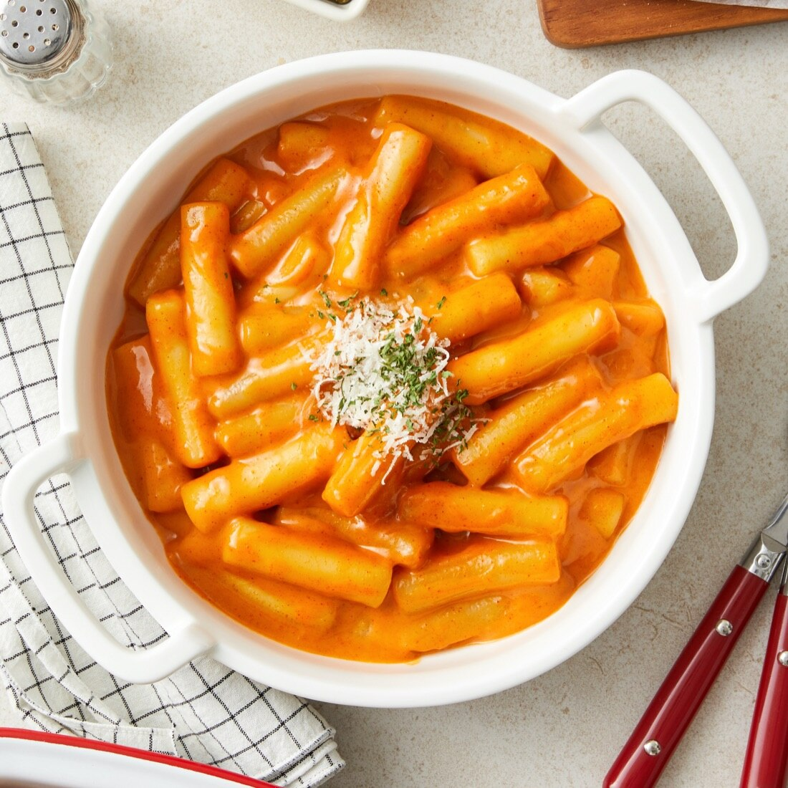
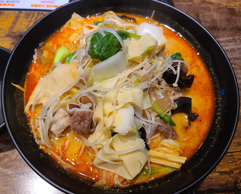
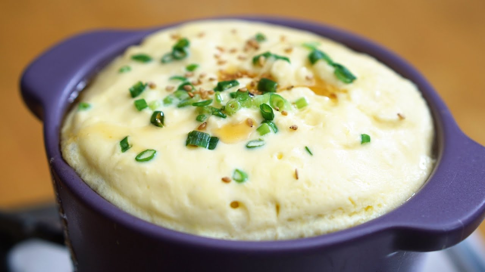

떡볶이
원하는 떡을 씻어서 준비한다!
물을 끓이고 소스를 넣고 끓이기! 취향에 따라 마라소스나 로제로 변경가능
준비한 떡과 어묵 등 재료들을 넣고 끓인다!
떡이 팬에 늘러붙지 않도록 주의~!하고 완성~~~

마라탕
숙주,청경채,여러 당면 등 원하는 재료를 준비한다
사골육수와 물을 넣고 마라소스를 넣고 끓인다!
재료들을 넣고 더 끓인다! 납작당면은 국물을 흡수하므로 육수를 조금씩 추가해야함!!

푸딩같은 계란찜
계란과 물또는 우유를 같이 풀어준다!!
소금을 사알짝 넣어서 간을 해준다
푸딩같은 식감을 위해 거름망에 세번정도 걸러준다
그릇에 담고 물에 중탕하기! 너무 오래하면 안됨
중탕한 냄비의 뚜껑을 닫고 잔열로 익혀주면 완성~~
